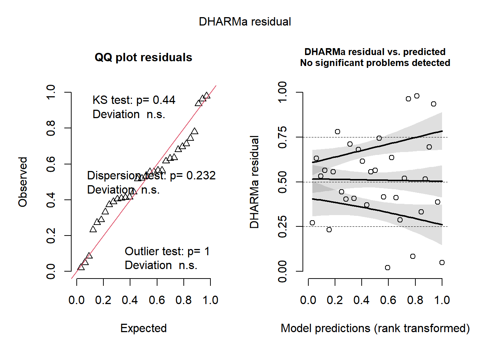

Code
library(gsheet)
library(ggplot2)
library(dplyr)
Anexando pacote: 'dplyr'Os seguintes objetos são mascarados por 'package:stats':
filter, lagOs seguintes objetos são mascarados por 'package:base':
intersect, setdiff, setequal, unionCode
library(DHARMa)This is DHARMa 0.4.7. For overview type '?DHARMa'. For recent changes, type news(package = 'DHARMa')Code
library(emmeans)Welcome to emmeans.
Caution: You lose important information if you filter this package's results.
See '? untidy'Code
library(multcomp)Carregando pacotes exigidos: mvtnormCarregando pacotes exigidos: survivalCarregando pacotes exigidos: TH.dataCarregando pacotes exigidos: MASS
Anexando pacote: 'MASS'O seguinte objeto é mascarado por 'package:dplyr':
select
Anexando pacote: 'TH.data'O seguinte objeto é mascarado por 'package:MASS':
geyserCode
url_campo <- "https://docs.google.com/spreadsheets/d/1bq2N19DcZdtax2fQW9OHSGMR0X2__Z9T/edit?gid=866852711#gid=866852711"
campo <- gsheet2tbl(url_campo) |>
mutate(TRAT = factor(TRAT),
BLOCO = factor(BLOCO),
FER = as.numeric(FER))
# Modelo linear
m_campo <- lm(log(FER) ~ BLOCO + TRAT, data = campo)
# ANOVA
anova(m_campo)Analysis of Variance Table
Response: log(FER)
Df Sum Sq Mean Sq F value Pr(>F)
BLOCO 3 0.2064 0.06880 1.7961 0.1788
TRAT 7 11.5210 1.64585 42.9665 4.838e-11 ***
Residuals 21 0.8044 0.03831
---
Signif. codes: 0 '***' 0.001 '**' 0.01 '*' 0.05 '.' 0.1 ' ' 1Code
# Diagnóstico de resíduos
plot(simulateResiduals(m_campo))
Code
# Médias e comparações
means_campo <- emmeans(m_campo, ~ TRAT, type = "response")
cld(means_campo) TRAT response SE df lower.CL upper.CL .group
6 2.98 0.292 21 2.43 3.65 1
4 3.08 0.301 21 2.51 3.78 1
5 3.24 0.317 21 2.64 3.97 1
7 3.37 0.330 21 2.75 4.13 1
8 3.48 0.341 21 2.84 4.27 1
3 3.81 0.373 21 3.11 4.67 12
2 5.68 0.556 21 4.63 6.96 2
1 20.02 1.960 21 16.33 24.54 3
Results are averaged over the levels of: BLOCO
Confidence level used: 0.95
Intervals are back-transformed from the log scale
P value adjustment: tukey method for comparing a family of 8 estimates
Tests are performed on the log scale
significance level used: alpha = 0.05
NOTE: If two or more means share the same grouping symbol,
then we cannot show them to be different.
But we also did not show them to be the same.